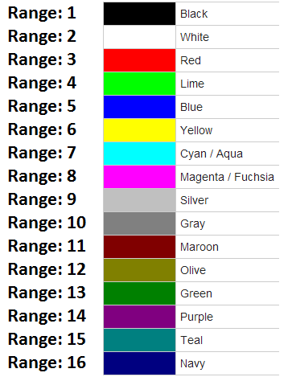

Is een afkorting van de primaire kleuren: Rood, Groen en Blauw. Kom je voornamelijk tegen op beeldschermen, zoals bij je telefoon, fototoestel en computers- en televisieschermen. Dit kleurmodel wordt ook wel een additief kleurmodel genoemd. De basis van dit model is kleurloos en de kleuren worden gevormd wanneer er licht aan toe wordt gevoegd. Om die reden is een beeldscherm dat uistaat zwart.
Is een afkorting van Cyaan, Magenta, Yellow en Key (zwart). Dit kleurmodel wordt gebruikt voor drukwerk en print producties. Door deze vier kleuren te gebruiken kunnen we zo goed als elk mogelijke kleur maken. In principe zou dit ook met alleen CMY kunnen, zij het niet dat met een mix van deze kleuren op 100% geen mooie kleur zwart te maken valt. Om die reden is de kleur Key (zwart) toegevoegd. Handig om te weten: Het CMYK kleurmodel wordt ook wel full colour genoemd.
